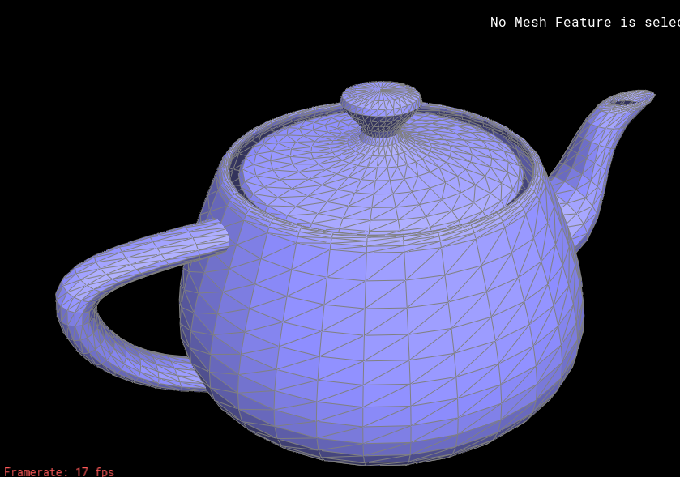
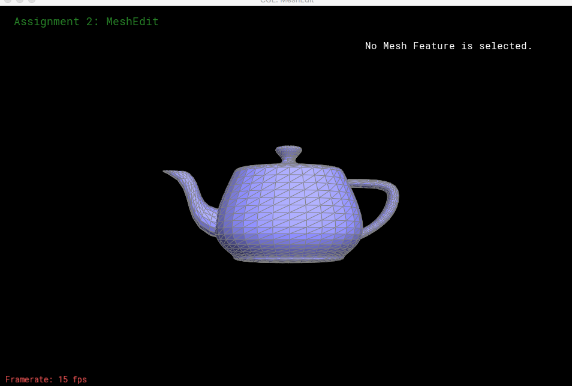
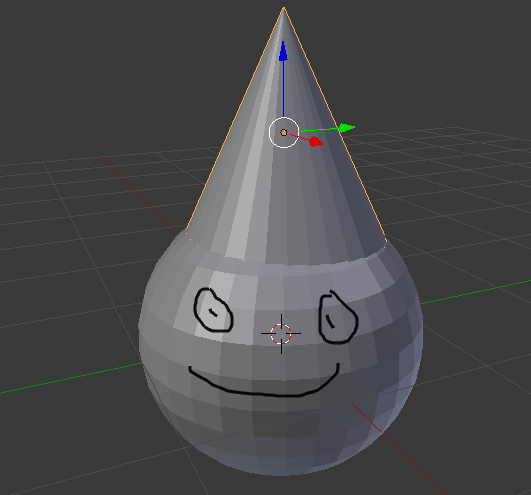

In this assignment, I worked with Bezier surfaces and control points to draw curves. Averaged the normals of meshes to interpolate shading across smooth surfaces. Split and flipped the edges of a halfedge data structure. Upsampled our triangles with 4-1 loop subdivision. Implemented the Blinn-Phong and environment reflection shading model, and designed my own mesh.
In part 1, I tessellated a Bezier surface into triangles on an 8x8 grid. Tessellating a surface is analagous to sampling a surface. Since we're sampling on an 8x8 grid, I uniformly sampled the uv coordinates of the mesh by sampling every 1/8th interval. With bezier surfaces, we are given control points that determine the shape of our curve. In this assignment, we were given 16 control points, and to evaluate what points our curve would use, I had two choices. The first choice was to use De Casteljau's algorithm which works geometrically by recursively splits bezier curves until we basically have a tangent line to all the points in our curve, from which we can that start drawing our curve. The second approach to evaluating the uv coordinates was to use Bernstein polynomials. I used this approach because it was a more algebraic approach that I could easily translate into code. 3rd degree Bernstein polynomials allow us to evaluate fractions of a curve and then combine all these curves at the end to make one smooth curve. Using our control points and evaluating the uv coordinates, we were able to get all the 3D points needed for our curve. Finally, since we are working with meshes, it was important that once we had all the points for our triangle, that we could draw our triangle in a direction that was consistent for both our triangles. This allowed for our normal vector to point outward of our teapot rather than inward, which greatly affets the lighting of our object!
One (embarrasing) debugging error I had during this part of the assignment was that I implemented the choose function wrong for the Bernstein polynomials. Fortunately, this led to me double checking all my work, which helped me gain a better understanding of what was going on.
|

|
|

|
In part2, I took the area-weighted average of the vertex normals to to get smoother shading on our surfaces. Similar to anti-aliasing, averaging the vertex normals sort of blurs our image to make it more smooth. We're using the weighted average of the vertex normals to create a smooth gradient across our surface. Essentially, by giving openGL more surface normals to work with, we can create more accurate lighting that results in smooth shading.
The most difficult aspect with this part of the assignment was familiarizing and working with the halfedge data structure. Since we didn't have to change any values of our original mesh, I used const iterators for the traversal. The way I got the vectors was by getting each neighboring vertex, subtracting it by our vertex position and then crossing it with the next neighboring vertex.
Before weighted average normals
After. The improved smoothness on the body of teapot is insane.
In part 3, I implemented edge flips. This would flip any non-boundary edge, such that the edge would disconnect from its old 2 vertex endpoints, and connect with the two adjacent endpoints. Although this operation seemed trivial at first, I had no idea the amount of pointers that would need to be involved and reassigned for an edge flip. Luckily, the edge/split guide on how to properly assign pointers really helped me learn the association between halfedges, vertices, edges, and faces. Once I drew my before/after edge flip diagram, assigning the pointers became a lot easier. Somethings to watch out for are to properly assign the halfedge pointers so that the direction is consistent for all triangles. (We don't want our surface normal to point inward, but outward of the teapot). Also the vertex corresponding to an halfedge is at its base, not where the hook of the halfedge lies.
When I was initially assigning my halfedge pointers, I didn't use the setNeighbors function, which turned 5 lines of code into 1 for each halfedge pointer. The first time I tried to flip an edge, I was getting holes in my teapot. I knew the cause of this was a misassigned pointer, which it was! However, I knew that if I wanted to gain a better grasp of my pointers, the setNeighbors function would be more necessary since it greatly reduced the complexity of maintaining my flip and soon split edge functions. A progamming lesson I took away from part 3 is that software in a way is really about just managing complexity. There can be a lot of moving parts in a large program and so if I can make my code more concise, it would make my code more readable and easier to debug.
Before edge flip.
After 4 edge flips.
The edge split was more challenging than the flip since splitting in edge resulted in creating 6 halfedges, 1 vertex, 3 edges, and 2 faces. By splitting an edge between two triangles, we now get 4 triangles. All 4 of them being split where the newest vertex was created. My before diagram of the edge split was identical to that of the edge flip. However, my after diagram was much different partially because of how the newly allocated halfedge objects were now halfeges for the two created triangles.
The biggest challenge I had with split edge was creating the new halfedge objects. I tried creating objects similar to how they were made in edge flip, but this resulted in a dead end since I would not have a halfedge defined before its twin, and the twin not assigned before the halfedge. This circular loop made me realize that there had to be some other way of creating new halfedge objects. The real anchor in split edge, really happens at the newly created vertex where we specify its position to be the midpoint of the the edge it just split. We use this vertex, as an anchor to start defining all our other halfedge objects around this vertex point. (I could finally say that halfedge h0 points to the newly created vertex4)
In part 5 I implemented upsampling via loop subdivision. What this basically does is split every triangle into 4 triangles smaller triangles. In this way, we are sort of subdividing our mesh to get finer and finer triangles across our surface. Although it may seem like we are just making smaller triangles, we are also recalculating the vertex positions and where they would be placed by approximating the values of our original triangle. We're using information about our original triangle to determine how the newer triangles should be placed on our surface.
Part 5 was by far the most time consuming and challenging part of the project for me. It took me 3 weekend days! (But was totally worth it) Part 5 used the edge split in part 4 to subdivide all of our edges, and then we used the edge flip in part 4 to flip the edge to neatly get our 4-1 triangle. A lot of work was done in pre-processing the triangle where we set all the old vertices and edges as not being new. This was to know what edges would need to be split later since we don't want to split edges that were just created. The major bugs I had with this part was that I was flipping edges I thought were to be new rather than false. These 2 edges were among the edge that we just split. My other bug was that when I was determining whether or not to flip an edge, I was looking at its first and last vertices and seeing if they were new and old. I didn't think about the possibility that the first endpoint could have been old and the second endpoint new.
(Picture above)I'm not sure if I was able to perfectly subdivide my cube, but I did split all the edges prior to upsampling. What I noticed was that my upsampled cube was a lot less rigged, especially around the edges. The sharp edges of the cube also began to go away and the result were edges that were extremeley rounded. I think this was happening because our re-weighing of the vertices didn't know how to approximate the corners of our cube accurately (where three edges are meeting).
For part 6, I implemented the Blinn-Phong reflection model and environment map reflection shading. For the Phong shading model, I computed the ambient, diffused, and specular values. The trick with getting the specular value right was that I needed to make the brighntess very intense, to do this I raised the dot product of my normal and halfvector near normal to the 65th power! As seen from the cosine power plots slide, increasing the p or power, made a more narrow and higher intensity light on my object. For the environment mapping, I was a little less sure of what I was doing. Primarily because I was dealing with the theta/phi angles. These angles are used to get the spherical coordinates from which then we can then access the texture coordinates of our surface by dividng by 2pi and pi.
Initially, I had some trouble working with the GLSL language. I tried importing some libraries, which I found out I wasn't allowed to do! I was also thrown off with some of the type declarations such as creating a vec3 type. The result of this shading was just awesome!
My mesh is a work in progress...
|

|
184 wouldn't be 184 without the bugs.